Welcome to the Water
あなたは見物人ではありません。乗客でもありません。あの船に乗り込み、あるいは岩場に足を踏み入れたその瞬間から、あなたはアングラーです。そしてその言葉には重みがあります。アングラーは海を読み、海に敬意を払い、次に起こることを予測し、目的を持って動きます。今回の遠征では、あなたはそれ以上の存在でもあります。釣竿を手にしたホスピタリティのプロフェッショナルなのです。
本ガイドは、必要なことのすべてをお伝えします。30度の炎天下、火山岩の上で片手にロッド、片手にネットを持っているとき、調べている時間はありません。事前の準備こそが、あなたの命綱です。
小笠原諸島は東京の南およそ1,000kmに位置する、ユネスコ世界自然遺産の火山島群で、日本でも有数の豊かな漁場に囲まれています。拠点は母島です。
| 6月の小笠原 | 状況 |
|---|---|
| 気温 | 26〜30℃、極度の高湿度 |
| 海水温 | 25〜27℃ |
| 紫外線 | 極めて強い |
| 潮流 | リーフ周辺で強い |
| 補給 | ゼロ。フェリーは週1〜2便 |
| 医療搬送 | ほぼ不可能。最寄りの病院まで船で24時間 |
あなたはAEGIS基準のもと、AIBOSの一員として働きます。完璧が標準です。誰も手を止めてはいけません。あなたの任務は、渡辺様、永谷様、そしてゲストの皆様に最高の釣り体験をご提供すること。仕掛けにエサを付け、ドリンクを切らさず、道具を整え、安全を絶やさないことです。
全10部と付録で構成されています。第1〜2部は心構え。第3〜4部はタックルとスキル。第5部は釣りのシーン。第6〜7部はVIP対応と道具の整備。第8〜9部は安全とルール。第10部はトレーニング。付録はラミネート可能なリファレンスカードで、魚種と食味の完全ガイドも含みます。最初から最後まで読み、常に手元に置いてください。
Your Mindset — 6 Principles
この6つの原則を頭に叩き込んでください。釣り、給仕、荷造り、桟橋に立つときまで、あらゆる場面で通用します。
指示を待ってはいけません。エサを付け、ドリンクを注ぎ足し、ネットを構え、ドラグを確認する。誰かに頼まれる前に。待機時間はゼロ。常に。
厳格な優先順位：渡辺様 ＞ 永谷様 ＞ ゲスト ＞ AEGIS。給仕の順番、ラインへの注意、日陰、最初の一杯。常にその状態を把握すること。
素早く結び直す。すぐにネットを入れる。近くで誰かが掛けたら自分の仕掛けを回収する。船長には即座に応じる。決して全員を待たせない。
至る所に危険があります。危険なら、止まる。どんな魚も怪我に値しません。他のすべての原則に優先します。
母島に釣具店はありません。壊せば、それで終わり。擦れる前に結び直し、釣行後はすすぎ、根掛かりを避け、衝撃から守ること。
ホスピタリティの雰囲気は、あなたの振る舞いそのもの。目に見えて前向きに、元気よく。一匹一匹の釣果に全力で喜ぶこと。
Know Your Tackle
ここで扱うものはすべて、火山島の地形における亜熱帯のソルトウォーター（海水）を前提としています。
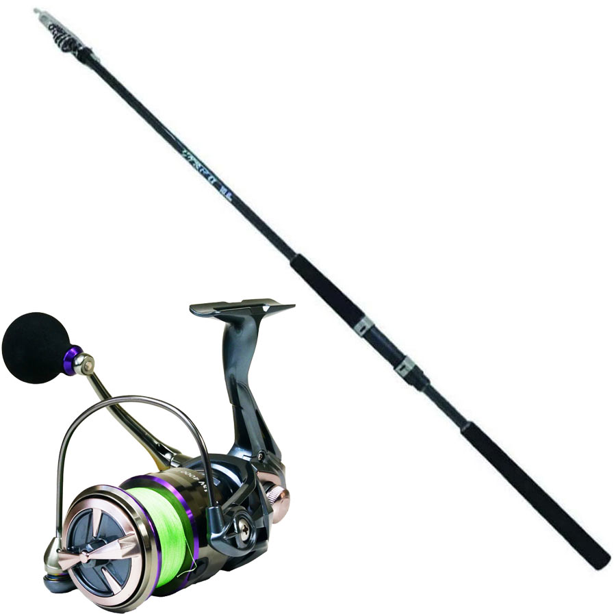
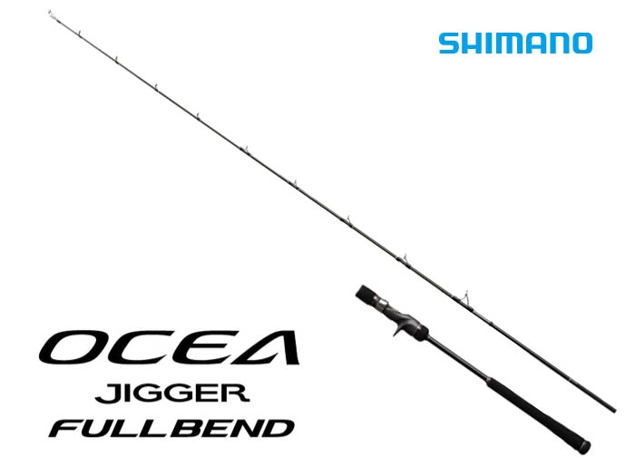
| タイプ | 用途 | 特徴 |
|---|---|---|
| 磯（I/II） | 岩場釣り | 4〜5mと長く、先調子は柔軟、バットは強い |
| ジギング | オフショア | 1.5〜1.8mと短く硬い。重いジグ用 |
| ライト | 港・桟橋 | 中庸で汎用的 |
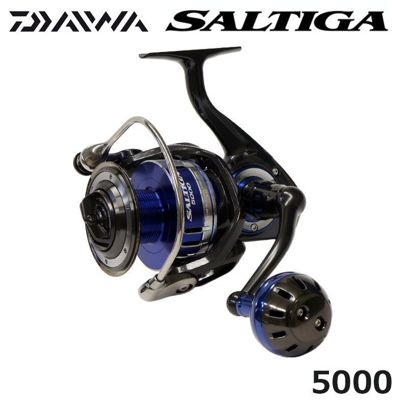
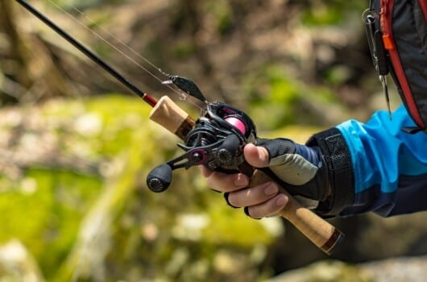
リールをガンネル（船べり）、地面、砂に決して触れさせないこと。母島に替えはありません。
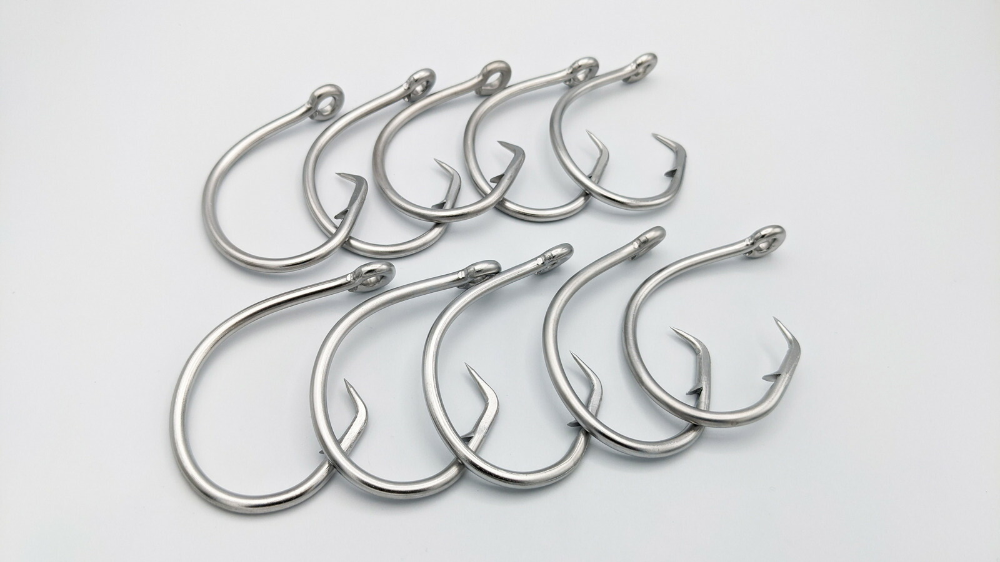
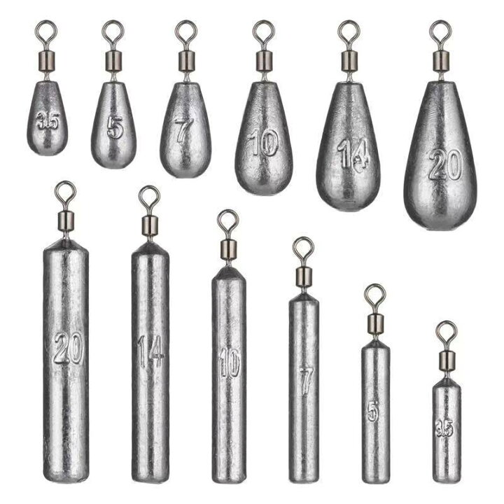
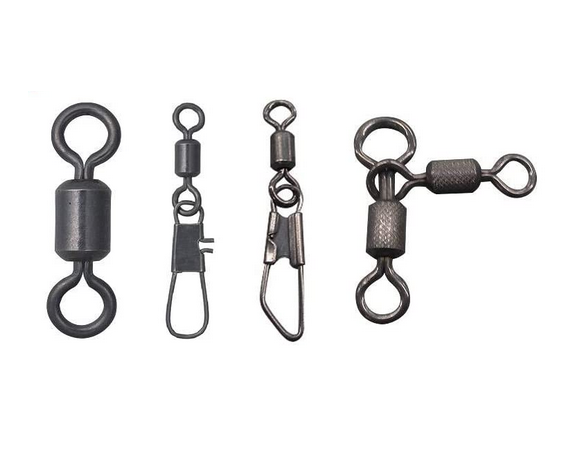
| タイプ | 特性 | 用途 |
|---|---|---|
| モノ（ナイロン） | 伸びがあり扱いやすい | リーダー、軽い仕掛け |
| ブレイド（PE） | 伸びゼロ、細く強い | ジギングのメインライン |
| フロロカーボン | 見えにくく、擦れに強い | フック／ルアーへのリーダー |
オナガを狙う水深250m以上では、細いPEのほうが潮を切る。誤差の余地は少ない。ノットは完璧でなければならない。
岩場で見ながら真似できる手本はありません。これらは体で覚える必要があります。濡れた状態で、立ったまま、風の中で、それぞれ練習すること。詳しい手順は付録Bにあります。
| ノット | つなぐもの | ひと言 |
|---|---|---|
| FGノット | PE（ブレイド）とリーダー | 強度ほぼ100%。ガイドを通るほど細い |
| インプルーブド・クリンチ | ラインとフック／オモリ | 通して5〜6回巻き、湿らせて締める。30秒以内で |
| 電車結び | ライン同士 | 互いを5回ずつ巻き、寄せて締める |
エサ屋はありません。エサの確保は、最も重要なスキルの一つです。
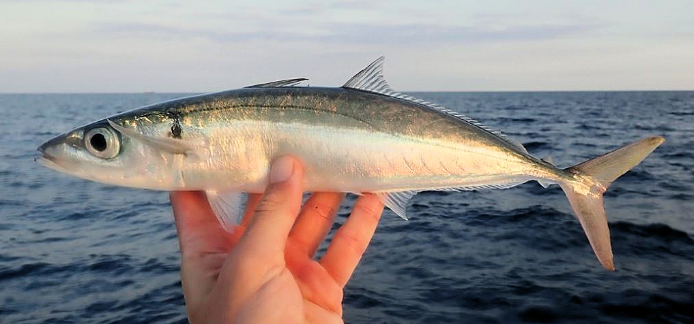
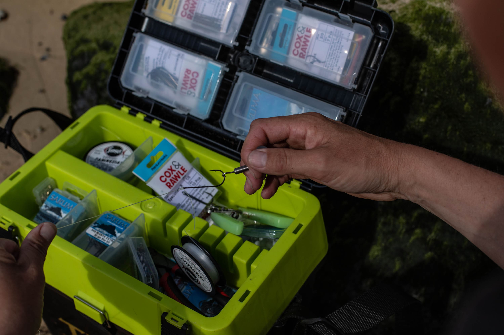
| エサ | 入手先 | 釣れる魚 |
|---|---|---|
| クロガニ（磯ガニ） | 港で網 | 磯魚 |
| 小アジ | サビキ | フィッシュイーター用の生きエサ |
| ムロアジ | 支給品 | ハタ類、ヒラアジ類、フエダイ類 |
| ウニ | 岩場で採取 | イシガキダイ |
| イカ | 支給品 | 磯魚全般 |
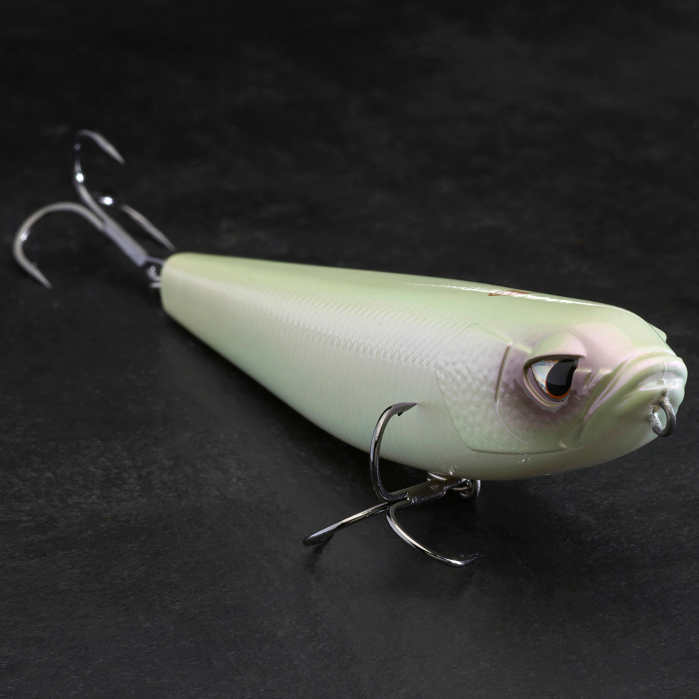
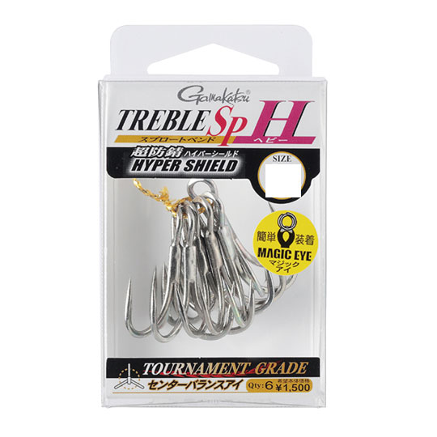
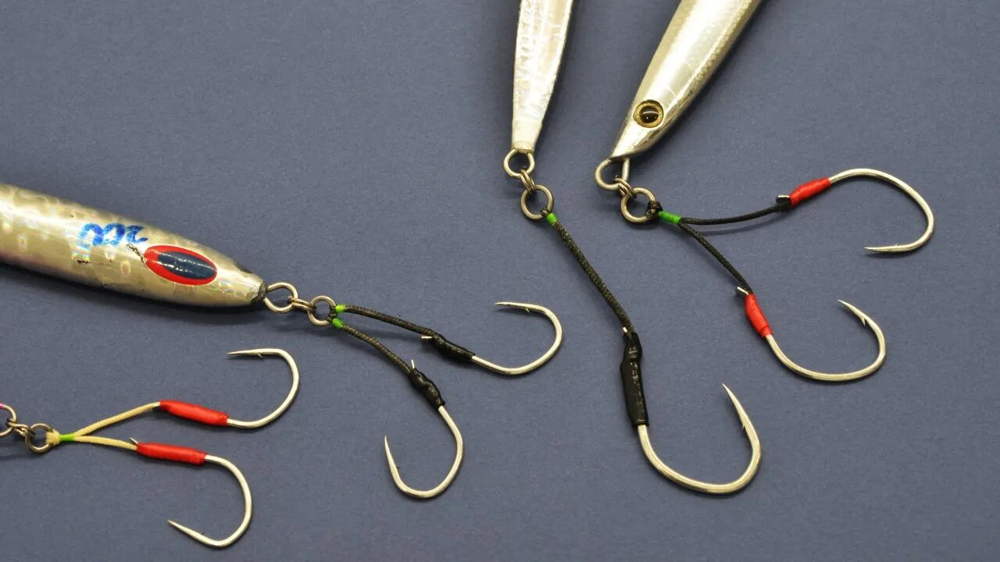
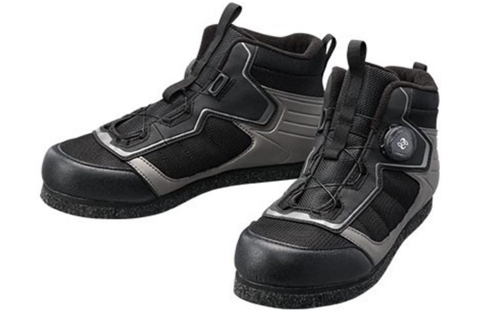
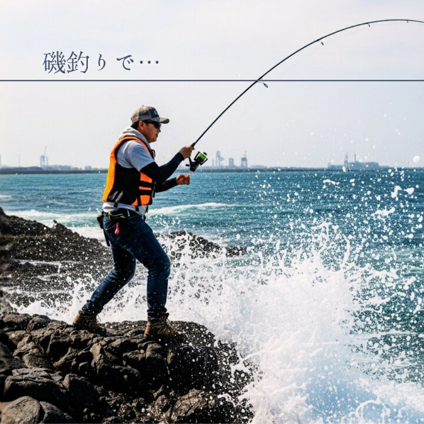
Essential Skills
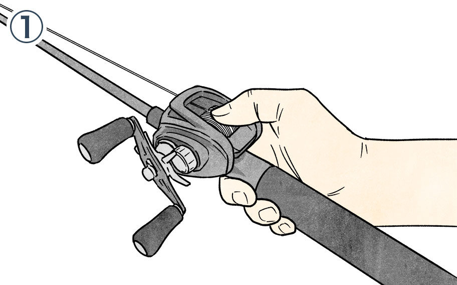
基本のキャスト。ロッドを2時の位置から滑らかに10時へ、そこでリリース。スムーズになるまで練習を。
後ろにスペースがないとき。ロッドを上げて前へ振り、ラインを転がし出す。飛距離は落ちるが安全。
短く正確に。ルアーを持ち、ベールを開け、前へ振り出す。磯のエサ釣りに静かで正確。
根掛かり＝ジグを失い、全員が止まる。8〜10回転ルールは保険。毎回必ず。
中層まで落とし、軽くしゃくる。一度に複数の魚が掛かる。新鮮な海水を入れたバケツに移す。
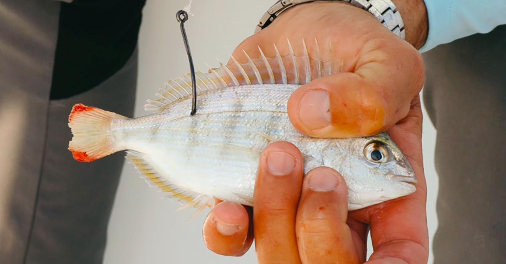
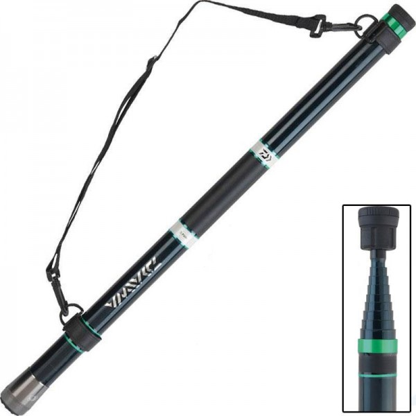
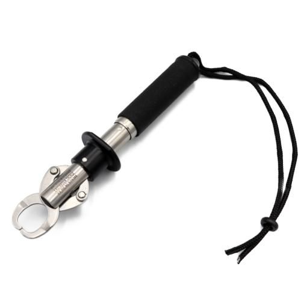
アタリがあったら、ロッドを上に鋭くあおってフッキング。ファイトはロッドを45度に保ち、ポンピングして巻く。ドラグが出ているときに巻いてはいけない。
ハタ類は即座にリーフへ突っ込む。2秒以内に浮かせないとラインが切れる。
ネットは必ず頭から。磯では体勢を安定させて。船では船べりから一歩下がる。
プライヤーを。必ず。カエシ付きの針は簡単に皮膚を貫く。イソマグロは鋭い歯を持つ。アオチビキはぬめるので、グローブを使う。
針を失い、ラインが切れたとき、VIPが裸のラインで待つ一秒一秒が失敗です。最大60秒。濡れた状態で、立って、風の中で練習を。
Fishing Scenarios
すべての釣行は、3つのシーンのいずれかです。完璧に覚えること。下の表は、各シーンで魚がどこにつき、どう狙うかをまとめたものです。魚種の詳細は付録Fにあります。
| シーン | 水深・場所 | 主なターゲット | エサ・釣法 |
|---|---|---|---|
| 港・桟橋 | 表層〜浅場、桟橋から | アジ（生きエサ用）、小型の磯魚 | サビキ、カニ |
| 磯 | 岸際〜水深約100mのリーフ | スジアラ、アカハタ、バラハタ、イシガキダイ、フエフキダイ、アオチビキ、GT、カッポレ | ムロアジ、ウニ、カニ、ワーム、ジギング |
| ジギング・沖 | 100〜300m | カンパチ、シマアジ、イソマグロ、キハダ・スマ、オナガ（250〜300m）、ウメイロ | メタル・インチクジグ、ウメイロにはサビキ |
桟橋・防波堤での釣り。エサ集めの作業＋VIPのゆったりとした釣り。
最優先はエサの確保。カニは網で、アジはサビキで。エサバケツを管理する。
一字一句読むこと。船が火山リーフに5〜6時間下ろします。戻れません。エサとルアーの釣りです。
6時間、30℃、日陰なし、逃げ場なし。絶えず水分を。電解質も。渡辺様の熱中症に注意。必要なものは、持ち込んだものがすべてです。
船からの深場の釣り。水深100〜200m。大物：カンパチ、マグロ、深場のフエダイ類。
テンションの掛かったPEを素手で触らない。グローブを。リールを船べりに当てない。
Taking Care of Your VIPs
| 優先 | 対象 | 担当範囲 |
|---|---|---|
| 1番 | 渡辺様 | すべてを最優先。 |
| 2番 | 永谷様 | その直後に。 |
| 3番 | ゲスト | 招待客の皆様。 |
| 4番 | その他AEGIS | 飲食・着席は最後。 |
仕草を読む。集中している＝近くにいるが付きまとわない。休んでいる＝ドリンクを勧める。魚が掛かった＝振り向く前にネットを準備。
Tackle Care and Cleaning
塩は数時間で金属を腐食させる。砂はベアリングを削る。紫外線はモノ（ナイロン）を劣化させる。道具は10日間もたせなければならない。手入れ＝生き残り。
先端10mを指でなぞる。傷んだ部分は切り戻す。白濁したモノ＝交換。毛羽立ったブレイド＝巻き替え。
Safety and Emergency
病院なし。フェリーは週1〜2便。携帯の電波なし。あなたが第一発見者であり、対応者です。
| 役割 | 担当 |
|---|---|
| 1. 現場リーダー | 指揮を執る。 |
| 2. 船長連絡 | ノブ／ハラと連絡。 |
| 3. 記録・通訳 | 記録する。EN／JPの橋渡し。 |
| 4. VIP付き添い | VIPのそばを離れない。 |
あなたの役目は、見失わず、船を向かわせること。
磯での最大のリスク。大量の発汗、吐き気、めまい。発汗が止まる＝熱射病＝緊急事態。日陰＋首・脇に冷水＋水分補給。渡辺様に注意。
素手厳禁。ゴンズイ（毒のあるトゲ）、ウツボ、ガンガゼ（ウニ）、イソマグロ（鋭い歯）。
個体によって毒を持つ。無臭・無味で熱にも強く、加熱しても消えない。しびれや温度感覚の逆転が、数時間後に現れることがある。疑わしければ食べない。どの魚を警戒すべきかは付録Fを参照。
ハンドサインはトレーニングのブロック3で確定：魚が掛かった／巻き上げ／通ります／止まれ／緊急。一人で抱え込まない。すぐに共有する。VIPの安全＞釣果。
Dos and Don'ts
Pre-Trip Training
| 日付 | ブロック | 内容 |
|---|---|---|
| 6月9〜11日 | 基礎 | ノット、エサ付け、仕掛け。まずノットから。 |
| 6月12〜15日 | 振る舞い | 桟橋・ジギング・磯の実地訓練＋給仕 |
| 6月16〜17日 | リハーサル | ハンドサイン＋緊急シナリオ |
| 6月18日 | 出発前日 | 安全ブリーフィング＋通し練習＋荷造り |
| 6月19日 | 出発 | ― |
各自が一つのスキルを習得し、チームに教える。担当は松本とネイトが割り当てる。
完全な安全ブリーフィング＋陸上での渡礁の実地練習＋在庫リストと照合する最終の荷造り確認。
Reference Cards（ラミネート推奨）
| ノット | 手順 |
|---|---|
| FGノット | リーダーをループにし、PEを15〜20回編み込む。交互にハーフヒッチ6回。カット。ガイドを通ること。 |
| インプルーブド・クリンチ | 環に約15cm通す。5〜6回巻く。小さい輪、続いて大きい輪に通す。湿らせ、締め、カット。 |
| 電車結び | 15cm重ねる。AがBを5回巻いて通す。BがAを5回巻いて通す。湿らせ、寄せて締め、カット。 |
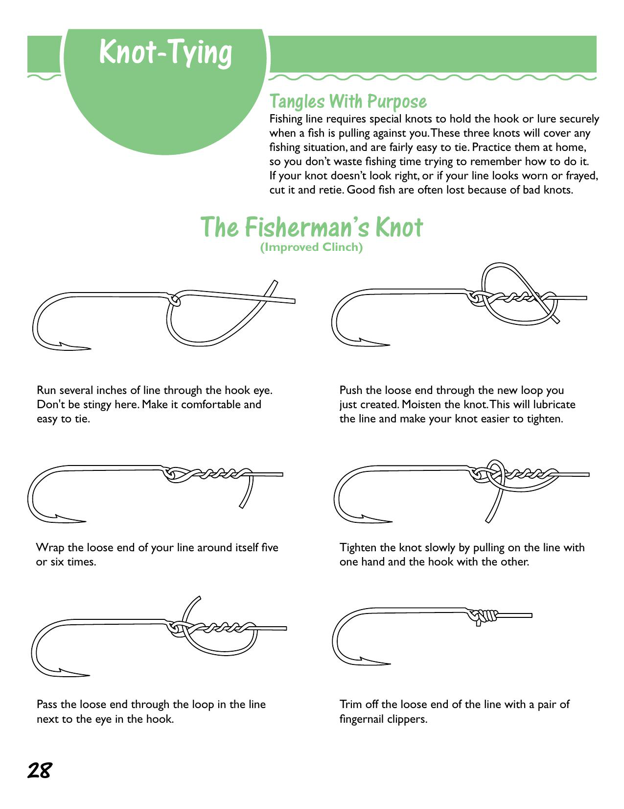
| サイン | 意味 |
|---|---|
| 拳を上に突き上げる | 魚が掛かった！ |
| 手をぐるぐる回す | 巻き上げ |
| 手のひらを前に | 止まれ／待て |
| 腕を振る | 緊急 |
| 肩を指して叩く | 通ります |
| 状況 | 対応 |
|---|---|
| 落水 | 飛び込まない。浮具を投げる。船長に連絡。指を差す。 |
| 骨折 | 動かさない。保温。出血を止める。共有。 |
| 針 | 無理に抜かない。固定。医療。 |
| 熱中症 | 日陰。冷却。水分。発汗なしなら熱射病。 |
| 危険生物 | 素手厳禁。洗浄。圧迫。医療。 |
Ogasawara Species & Edibility
何を釣っているのか、どこにつき、何に反応し、どう扱うかを知ること。食味の評価は、地元・小笠原の魚種ガイドによります。ホスピタリティでは、キープの魚、すなわち4つ星・5つ星の魚が、VIPにお出しするものです。
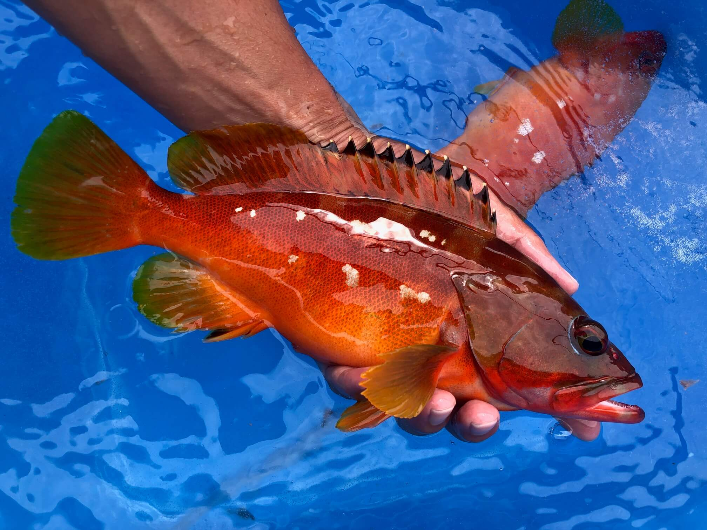
キープ VIPの食卓向けの上物 シガテラ 毒のリスク。疑わしければ食べない 取扱注意 歯・トゲ・ぬめり 食用稀 小笠原ではあまり食べない
| 魚種（和名／英名） | 場所・釣り方 | 水深 | エサ・ルアー | 食味 | 備考 |
|---|---|---|---|---|---|
| スジアラ Leopard Coral Grouper | 岩場、ジギングでも | 100m未満 | ウニ、ムロアジ、貝 | ★★★★★ | キープ 最高級の美味。 |
| オナガ（ハマダイ） Ruby Snapper | 船からスロージギング | 250〜300m | ジグ300g〜、PE3号 | ★★★★★ | キープ 深場。潮の影響が大きい。 |
| シマアジ White Trevally | 船からジギング（カンパチ狙いで） | 浅場〜200m超 | メタルジグ。あおりすぎない | ★★★★★ | キープ 母島周辺では取り込み難。 |
| アオチビキ Green Jobfish | 岩場、ジギング | リーフ | ジグ、ムロアジの一本針 | ★★★★★ | キープ 取扱注意 ぬめる。グローブを。80cm超。 |
| スマ Mackerel Tuna | 船からジギング（中層） | 中層 | メタルジグ | ★★★★★ | キープ 必ずキープ。一日一匹程度。 |
| アカハタ（「アカバ」） Blacktip Grouper | 浅いリーフ、簡単 | 浅いリーフ | ジグ、インチク、ワーム | ★★★★★ | キープ よく釣れる定番。 |
| バラハタ（「チギ」） Yellow-edged Lyretail | 浅いリーフ、ジギング＆磯 | 浅いリーフ | ムロアジ、ジグ | ★★★★★ | キープ 唐揚げが絶品。 |
| カンパチ Greater Amberjack | 船からジギング、キャスト | 浅場〜200m超 | メタルジグ | ★★★★★ | キープ 3〜5kgが美味。ライン切れ注意。 |
| キハダ（マグロ） Yellowfin Tuna | 船からジギング（中層） | 中層 | メタルジグ | ★★★★★ | キープ 群れに当たれば数釣り。 |
| ウメイロ Yellowtail Blue Snapper | 船からサビキ | 20〜30m | イカを付けたサビキ | ★★★★★ | キープ 底を切って巻かないと他魚が掛かる。 |
| オオモンハタ Areolate Grouper | アカハタ狙いの外道で | リーフ | インチクジグ | ★★★★★ | キープ 約35cm。 |
| ツチホゼリ Speckled Blue Grouper | 岩場、非常に稀 | 浅い砂地リーフ | ムロアジの一本針 | ★★★★★ | キープ 約1m。巣穴を掘る。 |
| イシガキダイ（「クチジロ」） Spotted Knifejaw | 岩場、ウニの殻をまく | リーフ | ウニ、カニ、貝 | ★★★★★ | キープ 30cm前後が美味。80cmまで。 |
| イソマグロ Dogtooth Tuna | 船・岩場からジギング | リーフ・中層 | メタルジグ | ★★★★★ | 取扱注意 鋭い歯。約2m。 |
| カッポレ Black Trevally | 岩場、多い | 表層・リーフ | ムロアジ、ルアー、ワーム | ★★★★★ | キープ 小さくてもよく引く。 |
| フエフキダイ Emperor Fish | 岩場、底付近 | リーフ | ムロアジ | ★★★★★ | 食用稀 リーフに突っ込むので素早く浮かせる。 |
| ロウニンアジ（GT） Giant Trevally | キャスト、船・岩場 | 表層・リーフ | スティックベイト、ムロアジ | ★★★★★ | 食用稀 50kg超。釣るのは難しい。 |
| バラフエダイ Two-spot Red Snapper | 岩場周りでキャスト | リーフ | ルアー、エサ | ★★★★★ | シガテラ 食用稀 10kgほどに。 |
| イソモンガラ Rough Triggerfish | イシガキダイ狙いの外道で | リーフ | 甲殻類のエサ | ★★★★★ | 食用稀 食味不明。肝が大きい。 |
| イスズミ Rudderfish | 岩場、多い | 表層 | ムロアジ、ワーム | ★★★★★ | 食用稀 表層付近でよく見かける。 |
Tackle & Technique at a Glance
トレーニング中にひと目で確認できる、一般的な技術の図解です。装備のタイプ、仕掛け、ルアーの種類といった普遍的な仕組みを示します。図中の魚種名やライン番手は一般的な例です。小笠原に固有の魚種・水深・エサについては、必ず第3部と付録Fを参照してください。
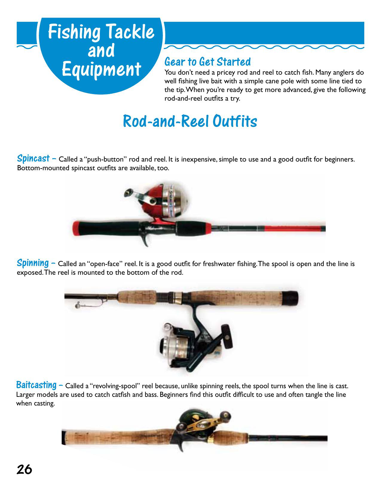
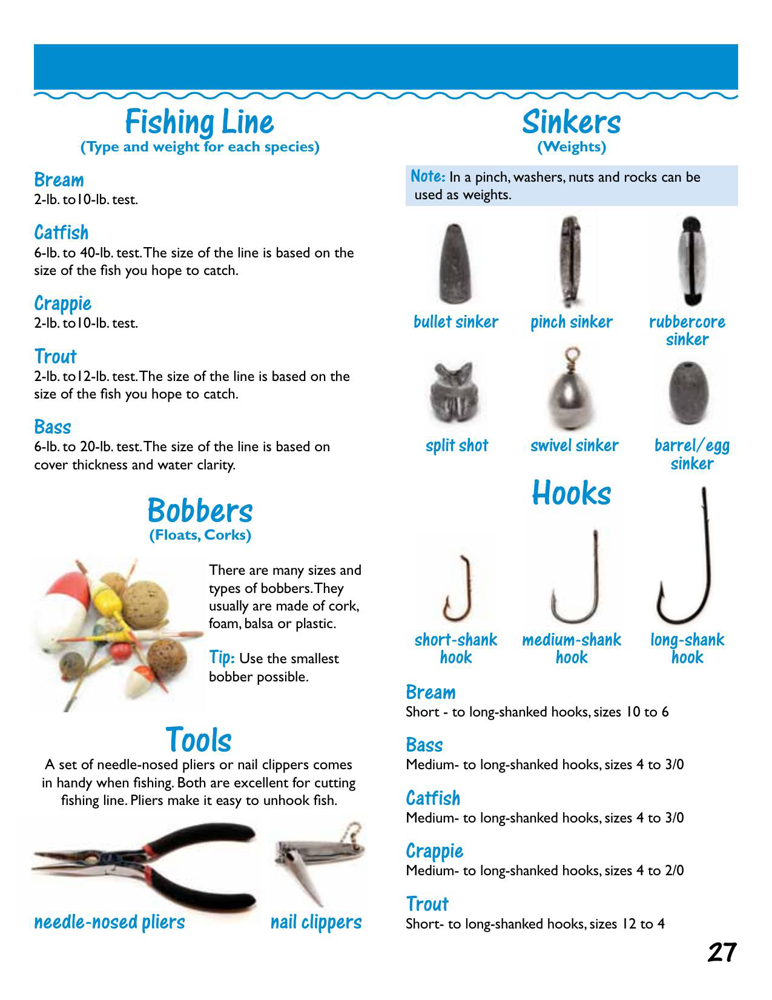
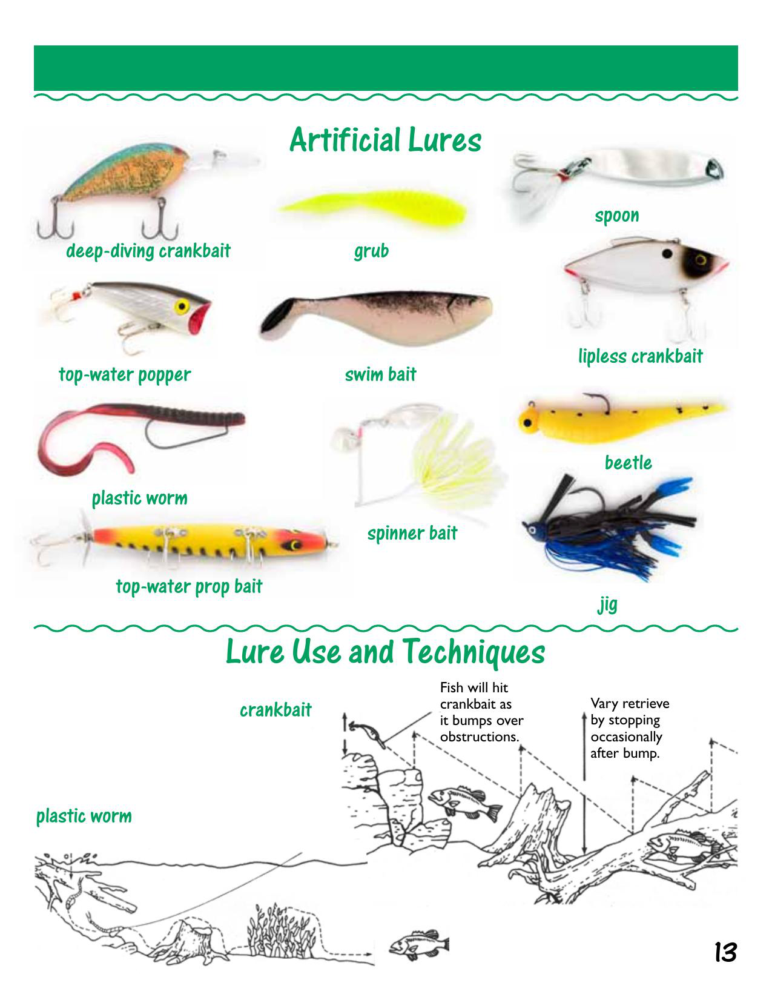
本ガイドを読み終えました。原則、タックル、スキル、シーン、ルールを理解しました。あとは訓練し、練習し、準備するのみ。母島に降り立つとき、あなたは準備ができています。
幸運を、アングラー。頑張って。
AIBOS ｜ 小笠原フィッシングガイド ｜ 2026年6月 ｜ 社外秘 ｜ 魚種データ：小笠原2018魚種ガイド